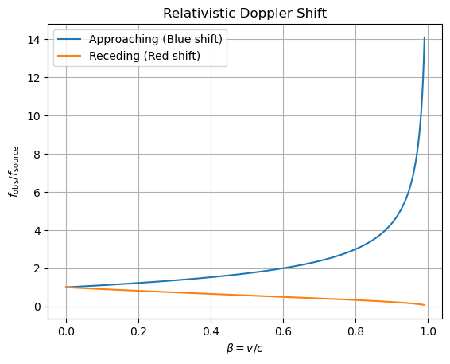

B8.2 Relativistic Doppler Shift#
B8.2.1 Motivation#
What is Doppler Shift?#
The Doppler effect describes the change in observed frequency of a wave due to relative motion between source and observer.
Classical analogy:
The pitch of a passing siren sounds higher when approaching and lower when receding.Relativistic difference:
In special relativity:Time dilation affects the emission rate.
Velocities add relativistically.
The relativistic Doppler shift is critical for understanding astronomical redshifts, laser cooling, and particle physics experiments.
Why Study It in Special Relativity?#
Direct Application of Lorentz Transformations
Like aberration, Doppler shift naturally emerges from time dilation and velocity addition.Connection to Other Relativistic Effects
Appears together with aberration in astrophysics.
Fundamental to understanding the headlight effect and relativistic beaming.
Astrophysical Relevance
Redshift of galaxies (cosmology).
Motion of binary stars.
Quasar jets and synchrotron radiation.
Laboratory Applications
Mössbauer effect experiments.
Laser cooling of atoms.
B8.2.2 Setup and Notation#
Consider:
A light source emitting radiation of frequency \(f_{\text{source}}\) in its own rest frame.
An observer moving with velocity \(v\) relative to the source.
Define:
\(\beta = v/c\)
\(\gamma = 1/\sqrt{1-\beta^2}\)
We want to find \(f_{\text{obs}}\), the observed frequency, as a function of \(v\) and \(f_{\text{source}}\).
B8.2.3 Derivation of the Relativistic Doppler Formula#
Longitudinal Motion#
We now compute the observed period when source and observer move directly along the same line (toward or away from each other).
Step 1: Proper Period in the Source Frame#
The source emits wave crests separated by its own proper period:
This is the time interval measured in the source’s rest frame between successive emissions.
Step 2: Time Dilation — Period in Observer Frame#
In the observer’s frame, the moving source’s clock is slowed by time dilation:
This is the time between two successive emissions according to the observer’s clock, ignoring relative motion effects for the moment.
Step 3: Effect of Source Motion on Wavefront Spacing#
During this time \(T'\):
The first wave crest has traveled closer to the observer at speed \(c\).
The source itself has moved relative to the observer by a distance \(v\,T'\).
Thus, the distance between consecutive crests along the line of sight changes:
Approaching case: The source moves toward the observer, so the spacing decreases:
\[\lambda_{\text{obs}} = cT' - vT' = (c - v)T'\]Receding case: The source moves away, so the spacing increases:
\[\lambda_{\text{obs}} = cT' + vT' = (c + v)T'\]
We can write this compactly using the upper/lower sign:
where:
Upper sign (− in \(1 \mp \beta\)): approaching → blue shift.
Lower sign (+ in \(1 \mp \beta\)): receding → red shift.
Step 4: Observed Period#
The observed period is:
Substitute \(T' = \gamma T_{\text{source}}\):
Step 5: Observed Frequency#
Invert the period to find the observed frequency:
Finally, substitute \(\gamma = 1/\sqrt{1-\beta^2}\):
This is the relativistic longitudinal Doppler shift formula.
Sign Interpretation#
Approaching: Use the upper signs in (3.2.6) → \(f_{\text{obs}} > f_{\text{source}}\) (blue shift).
Receding: Use the lower signs → \(f_{\text{obs}} < f_{\text{source}}\) (red shift).
Transverse Doppler Effect#
For purely transverse motion (\(\theta = 90^\circ\) in the observer frame):
No classical Doppler effect, but time dilation still changes frequency.
Set \(\beta_{\text{line of sight}} = 0\), leaving only \(\gamma\):
This is a redshift caused purely by time dilation — a hallmark of special relativity.
B8.2.4 Limiting Cases#
Low-Speed (\(\beta \ll 1\)):
Classical Doppler effect recovered.
High-Speed (\(\beta \to 1\)):
Approaching: \(f_{\text{obs}} \to \infty\) (extreme blueshift).
Receding: \(f_{\text{obs}} \to 0\) (extreme redshift).
B8.2.5 Worked Example#
Example: Observing a Fast-Moving Star
A star emits light with a rest-frame wavelength of \(500\,\text{nm}\). It is moving toward Earth at \(v = 0.8c\). Find the observed wavelength.
Solution:
Convert to frequency:
Compute \(\beta\) and Doppler factor:
Convert back to wavelength:
The light is shifted from visible green (\(500\,\text{nm}\)) into ultraviolet due to extreme blueshift.
B8.2.6 Visualization#

B8.2.7 Summary (Key Formulas)#
Longitudinal (Approaching, Blue shift)
\[ f_{\text{obs}} = f_{\text{source}}\sqrt{\frac{1+\beta}{1-\beta}} \]Longitudinal (Receding, Red shift)
\[ f_{\text{obs}} = f_{\text{source}}\sqrt{\frac{1-\beta}{1+\beta}} \]Transverse (Pure time dilation redshift)
\[ f_{\text{obs}} = \frac{f_{\text{source}}}{\gamma} \]Low-\(\beta\) (Classical limit)
\[ f_{\text{obs}} \approx f_{\text{source}}(1 \pm \beta) \]